Complete: 307 plots ready. Open all plots combined · Combined PNG / first sheet
Green circles succeed; red crosses fail. Original episode numbers are retained. Dense plots omit unrelated attempts; older plots leave them blank.
25/110 successes including 10 nominal references. Conditions: C01, C127, C128, C129, C130, C131, C132, C133, C134, C135, C136.
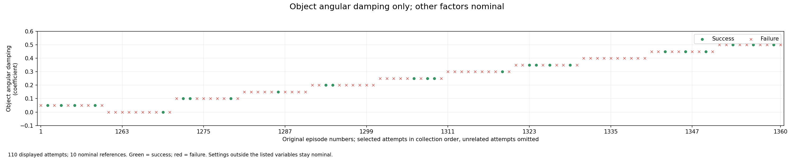
22/110 successes including 10 nominal references. Conditions: C01, C67, C68, C69, C70, C71, C72, C73, C74, C75, C76.
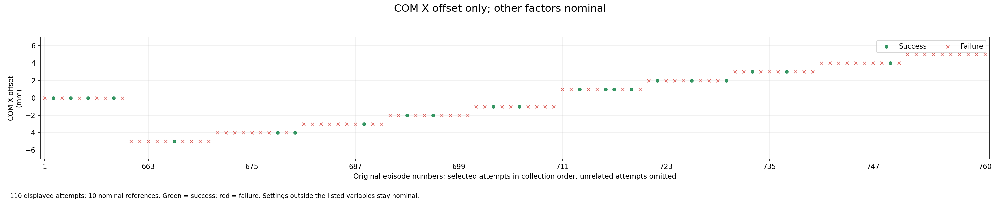
23/110 successes including 10 nominal references. Conditions: C01, C77, C78, C79, C80, C81, C82, C83, C84, C85, C86.
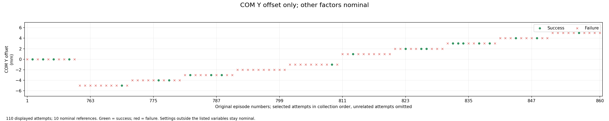
19/110 successes including 10 nominal references. Conditions: C01, C87, C88, C89, C90, C91, C92, C93, C94, C95, C96.
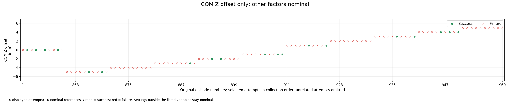
8/110 successes including 10 nominal references. Conditions: C01, C24, C25, C26, C27, C28, C29, C30, C31, C32, C33.
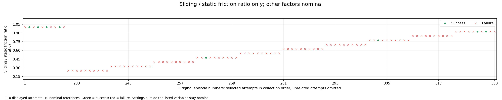
44/120 successes including 10 nominal references. Conditions: C01, C34, C35, C36, C37, C38, C39, C40, C41, C42, C43, C44.
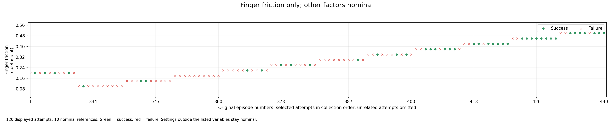
19/110 successes including 10 nominal references. Conditions: C01, C100, C101, C102, C103, C104, C105, C106, C97, C98, C99.
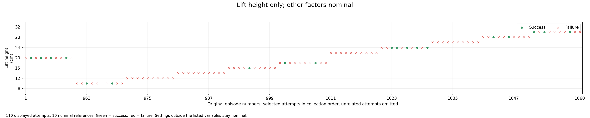
27/120 successes including 10 nominal references. Conditions: C01, C167, C168, C169, C170, C171, C172, C173, C174, C175, C176, C177.
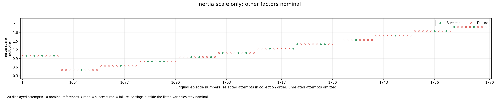
27/110 successes including 10 nominal references. Conditions: C01, C117, C118, C119, C120, C121, C122, C123, C124, C125, C126.
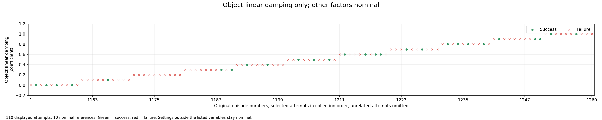
17/120 successes including 10 nominal references. Conditions: C01, C02, C03, C04, C05, C06, C07, C08, C09, C10, C11, C12.
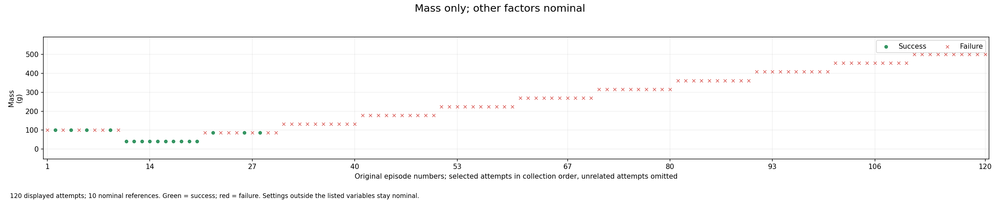
63/120 successes including 10 nominal references. Conditions: C01, C13, C14, C15, C16, C17, C18, C19, C20, C21, C22, C23.
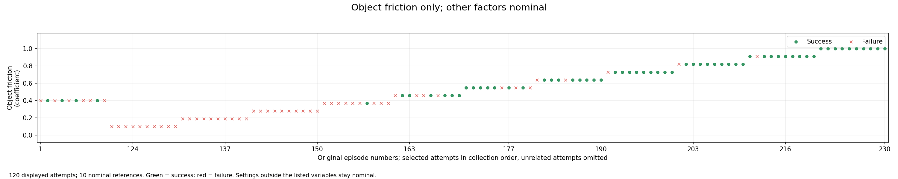
22/110 successes including 10 nominal references. Conditions: C01, C107, C108, C109, C110, C111, C112, C113, C114, C115, C116.
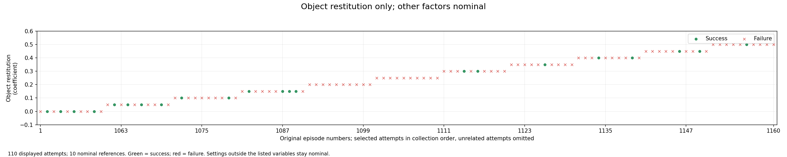
5/20 successes including 10 nominal references. Conditions: C01, C66.
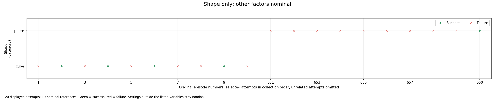
20/110 successes including 10 nominal references. Conditions: C01, C56, C57, C58, C59, C60, C61, C62, C63, C64, C65.
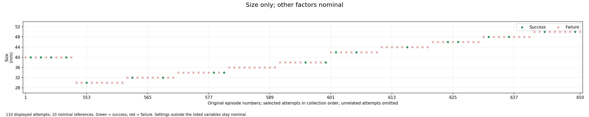
26/110 successes including 10 nominal references. Conditions: C01, C137, C138, C139, C140, C141, C142, C143, C144, C145, C146.
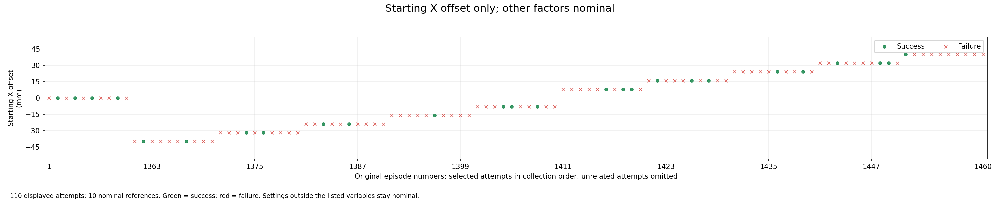
25/110 successes including 10 nominal references. Conditions: C01, C147, C148, C149, C150, C151, C152, C153, C154, C155, C156.
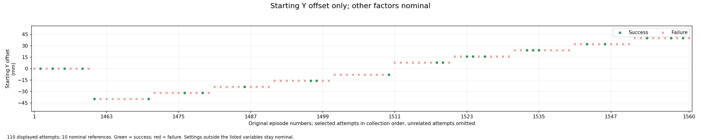
17/110 successes including 10 nominal references. Conditions: C01, C157, C158, C159, C160, C161, C162, C163, C164, C165, C166.
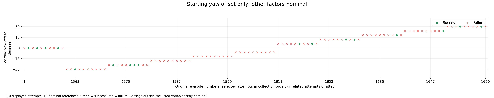
28/120 successes including 10 nominal references. Conditions: C01, C45, C46, C47, C48, C49, C50, C51, C52, C53, C54, C55.
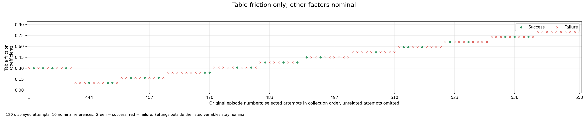
22/120 successes including 10 nominal references. Conditions: C01, C168, C2845, C2846, C2847, C2848, C2849, C2850, C2851, C2852, C2853, C2854.
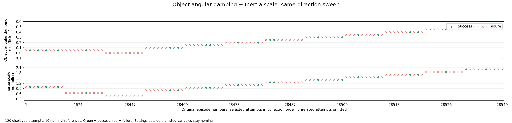
32/120 successes including 10 nominal references. Conditions: C01, C131, C138, C2791, C2792, C2793, C2794, C2795, C2796, C2797, C2798, C2799.
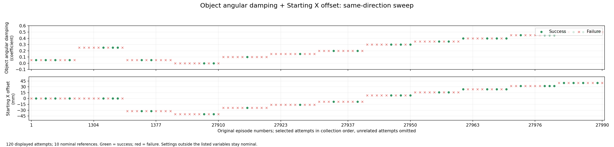
31/120 successes including 10 nominal references. Conditions: C01, C131, C148, C2809, C2810, C2811, C2812, C2813, C2814, C2815, C2816, C2817.
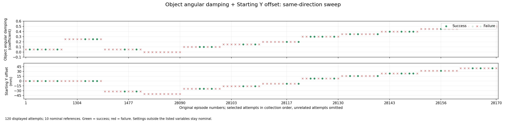
20/120 successes including 10 nominal references. Conditions: C01, C131, C158, C2827, C2828, C2829, C2830, C2831, C2832, C2833, C2834, C2835.
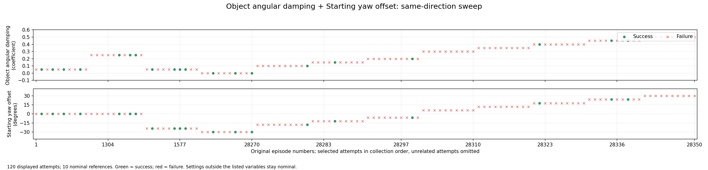
23/120 successes including 10 nominal references. Conditions: C01, C131, C2033, C2034, C2035, C2036, C2037, C2038, C2039, C2040, C2041, C68.
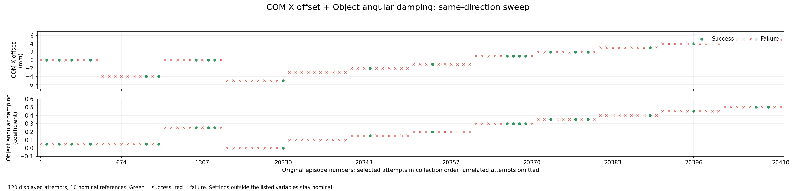
18/110 successes including 10 nominal references. Conditions: C01, C1937, C1938, C1939, C1940, C1941, C1942, C1943, C1944, C1945, C1946.
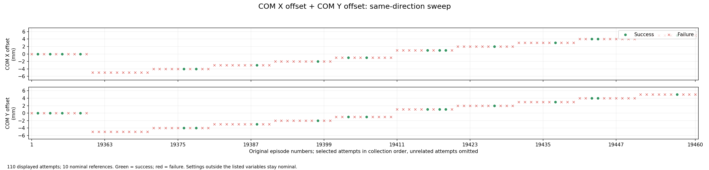
19/110 successes including 10 nominal references. Conditions: C01, C1957, C1958, C1959, C1960, C1961, C1962, C1963, C1964, C1965, C1966.
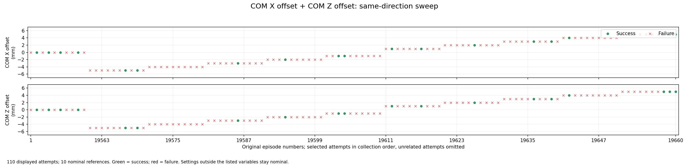
24/110 successes including 10 nominal references. Conditions: C01, C1977, C1978, C1979, C1980, C1981, C1982, C1983, C1984, C1985, C1986.
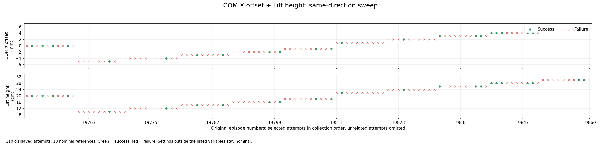
20/120 successes including 10 nominal references. Conditions: C01, C172, C2111, C2112, C2113, C2114, C2115, C2116, C2117, C2118, C2119, C2120.
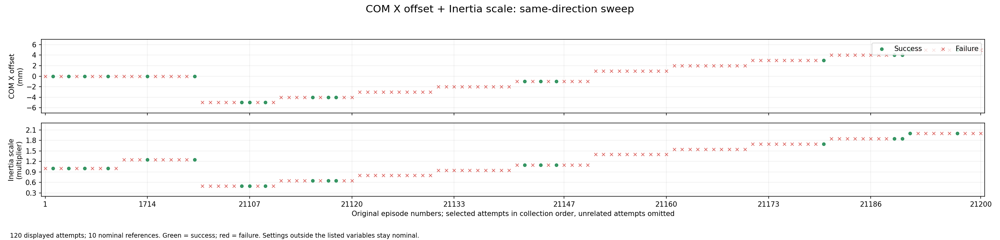
27/120 successes including 10 nominal references. Conditions: C01, C121, C2015, C2016, C2017, C2018, C2019, C2020, C2021, C2022, C2023, C67.
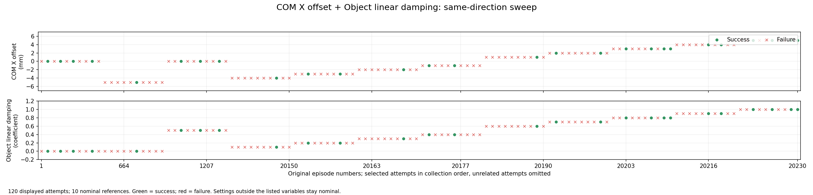
20/120 successes including 10 nominal references. Conditions: C01, C111, C1997, C1998, C1999, C2000, C2001, C2002, C2003, C2004, C2005, C67.
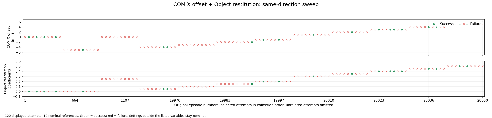
25/110 successes including 10 nominal references. Conditions: C01, C2051, C2052, C2053, C2054, C2055, C2056, C2057, C2058, C2059, C2060.
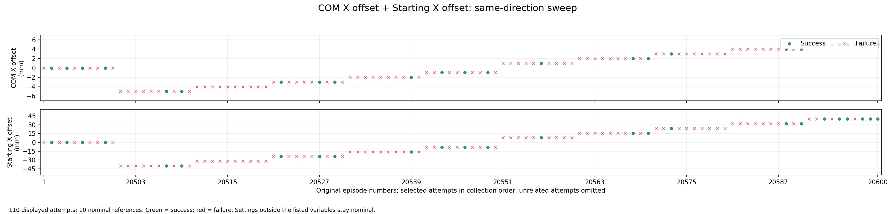
19/110 successes including 10 nominal references. Conditions: C01, C2071, C2072, C2073, C2074, C2075, C2076, C2077, C2078, C2079, C2080.
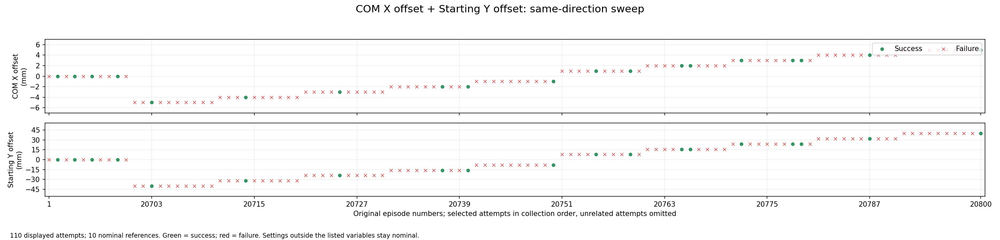
15/110 successes including 10 nominal references. Conditions: C01, C2091, C2092, C2093, C2094, C2095, C2096, C2097, C2098, C2099, C2100.
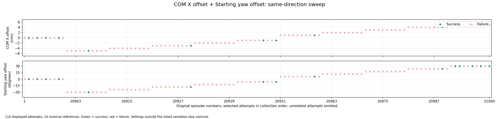
20/120 successes including 10 nominal references. Conditions: C01, C131, C2207, C2208, C2209, C2210, C2211, C2212, C2213, C2214, C2215, C78.
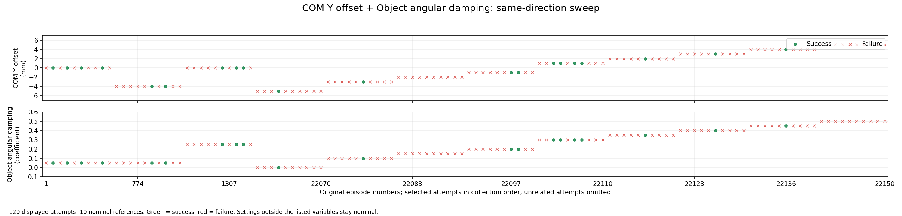
20/110 successes including 10 nominal references. Conditions: C01, C2131, C2132, C2133, C2134, C2135, C2136, C2137, C2138, C2139, C2140.
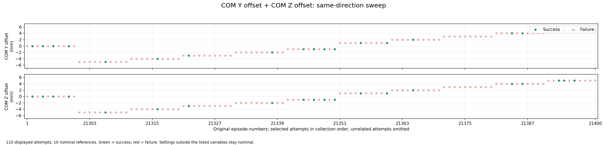
14/110 successes including 10 nominal references. Conditions: C01, C2151, C2152, C2153, C2154, C2155, C2156, C2157, C2158, C2159, C2160.
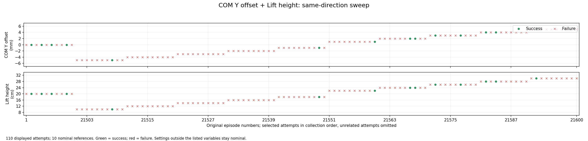
23/120 successes including 10 nominal references. Conditions: C01, C172, C2285, C2286, C2287, C2288, C2289, C2290, C2291, C2292, C2293, C2294.
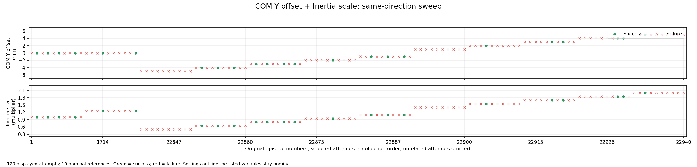
28/120 successes including 10 nominal references. Conditions: C01, C121, C2189, C2190, C2191, C2192, C2193, C2194, C2195, C2196, C2197, C77.
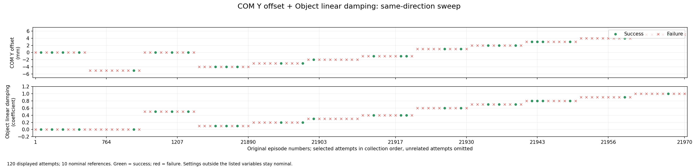
22/120 successes including 10 nominal references. Conditions: C01, C111, C2171, C2172, C2173, C2174, C2175, C2176, C2177, C2178, C2179, C77.
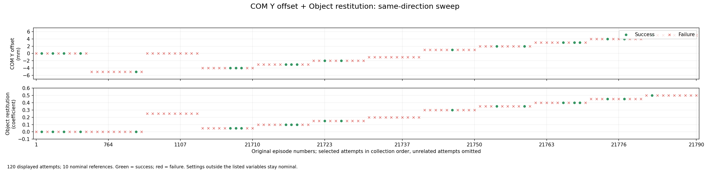
21/110 successes including 10 nominal references. Conditions: C01, C2225, C2226, C2227, C2228, C2229, C2230, C2231, C2232, C2233, C2234.
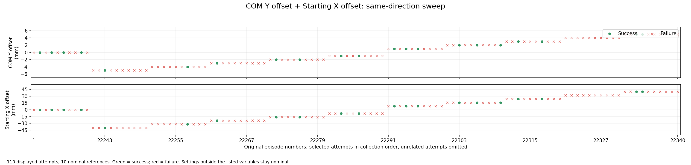
12/110 successes including 10 nominal references. Conditions: C01, C2245, C2246, C2247, C2248, C2249, C2250, C2251, C2252, C2253, C2254.
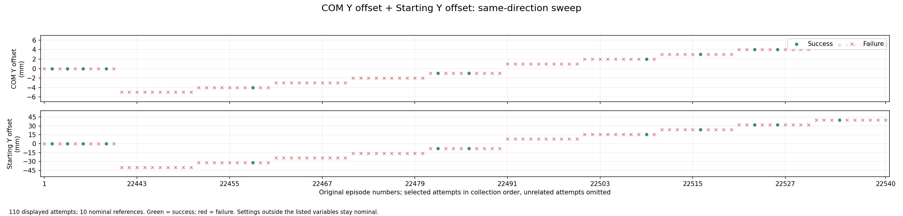
24/110 successes including 10 nominal references. Conditions: C01, C2265, C2266, C2267, C2268, C2269, C2270, C2271, C2272, C2273, C2274.
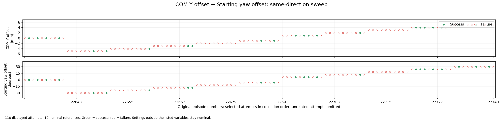
20/120 successes including 10 nominal references. Conditions: C01, C131, C2361, C2362, C2363, C2364, C2365, C2366, C2367, C2368, C2369, C88.
22/110 successes including 10 nominal references. Conditions: C01, C2305, C2306, C2307, C2308, C2309, C2310, C2311, C2312, C2313, C2314.
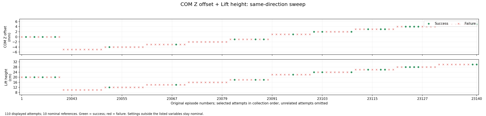
28/120 successes including 10 nominal references. Conditions: C01, C172, C2439, C2440, C2441, C2442, C2443, C2444, C2445, C2446, C2447, C2448.
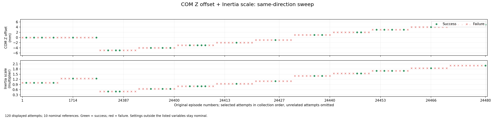
24/120 successes including 10 nominal references. Conditions: C01, C121, C2343, C2344, C2345, C2346, C2347, C2348, C2349, C2350, C2351, C87.
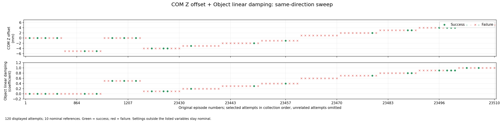
19/120 successes including 10 nominal references. Conditions: C01, C111, C2325, C2326, C2327, C2328, C2329, C2330, C2331, C2332, C2333, C87.
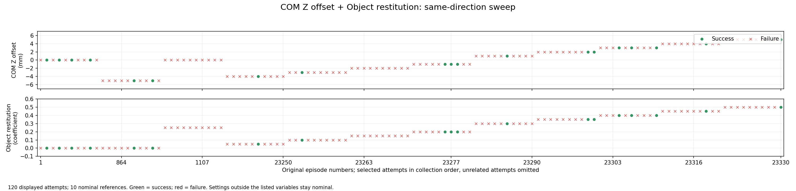
24/110 successes including 10 nominal references. Conditions: C01, C2379, C2380, C2381, C2382, C2383, C2384, C2385, C2386, C2387, C2388.
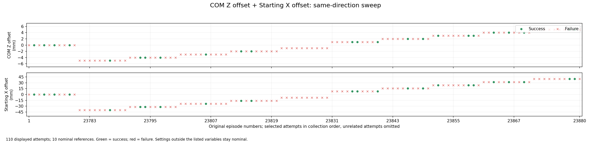
25/110 successes including 10 nominal references. Conditions: C01, C2399, C2400, C2401, C2402, C2403, C2404, C2405, C2406, C2407, C2408.
22/110 successes including 10 nominal references. Conditions: C01, C2419, C2420, C2421, C2422, C2423, C2424, C2425, C2426, C2427, C2428.
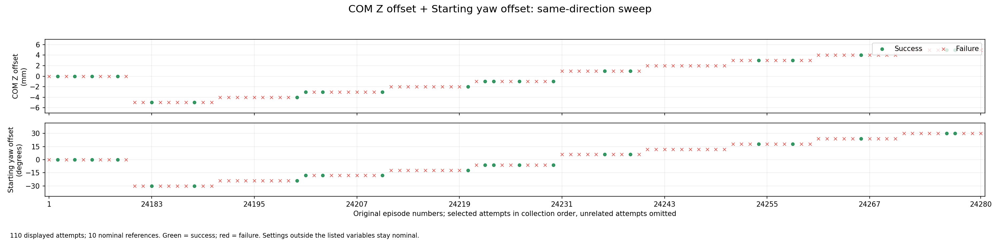
16/120 successes including 10 nominal references. Conditions: C01, C1000, C1001, C136, C25, C993, C994, C995, C996, C997, C998, C999.
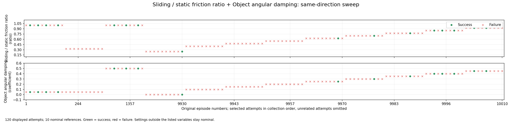
7/120 successes including 10 nominal references. Conditions: C01, C29, C76, C885, C886, C887, C888, C889, C890, C891, C892, C893.
8/120 successes including 10 nominal references. Conditions: C01, C29, C86, C903, C904, C905, C906, C907, C908, C909, C910, C911.
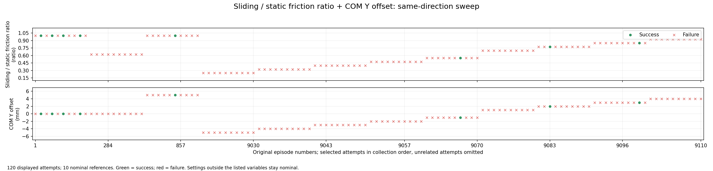
7/120 successes including 10 nominal references. Conditions: C01, C29, C921, C922, C923, C924, C925, C926, C927, C928, C929, C96.
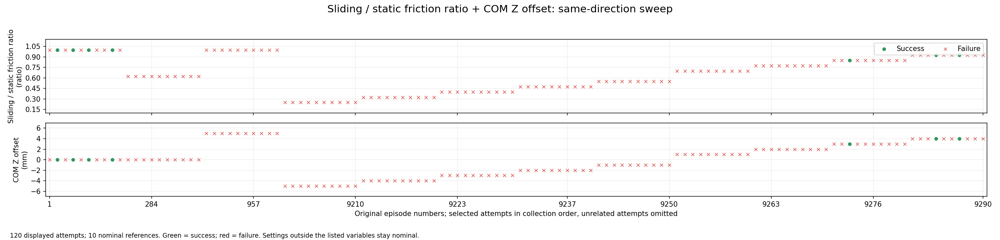
28/120 successes including 10 nominal references. Conditions: C01, C44, C819, C820, C821, C822, C823, C824, C825, C826, C827, C828.
14/120 successes including 10 nominal references. Conditions: C01, C106, C29, C939, C940, C941, C942, C943, C944, C945, C946, C947.
12/120 successes including 10 nominal references. Conditions: C01, C1064, C1065, C1066, C1067, C1068, C1069, C1070, C1071, C1072, C1073, C177.
11/120 successes including 10 nominal references. Conditions: C01, C126, C24, C975, C976, C977, C978, C979, C980, C981, C982, C983.
9/120 successes including 10 nominal references. Conditions: C01, C116, C24, C957, C958, C959, C960, C961, C962, C963, C964, C965.
8/120 successes including 10 nominal references. Conditions: C01, C29, C65, C857, C858, C859, C860, C861, C862, C863, C864, C865.
8/120 successes including 10 nominal references. Conditions: C01, C1010, C1011, C1012, C1013, C1014, C1015, C1016, C1017, C1018, C146, C29.
9/120 successes including 10 nominal references. Conditions: C01, C1028, C1029, C1030, C1031, C1032, C1033, C1034, C1035, C1036, C156, C29.
11/120 successes including 10 nominal references. Conditions: C01, C1046, C1047, C1048, C1049, C1050, C1051, C1052, C1053, C1054, C166, C29.
11/120 successes including 10 nominal references. Conditions: C01, C55, C838, C839, C840, C841, C842, C843, C844, C845, C846, C847.
59/120 successes including 10 nominal references. Conditions: C01, C1253, C1254, C1255, C1256, C1257, C1258, C1259, C1260, C1261, C1262, C35.
42/120 successes including 10 nominal references. Conditions: C01, C1135, C1136, C1137, C1138, C1139, C1140, C1141, C1142, C1143, C1144, C39.
49/120 successes including 10 nominal references. Conditions: C01, C1155, C1156, C1157, C1158, C1159, C1160, C1161, C1162, C1163, C1164, C39.
52/120 successes including 10 nominal references. Conditions: C01, C1175, C1176, C1177, C1178, C1179, C1180, C1181, C1182, C1183, C1184, C39.
50/120 successes including 10 nominal references. Conditions: C01, C1195, C1196, C1197, C1198, C1199, C1200, C1201, C1202, C1203, C1204, C39.
47/120 successes including 10 nominal references. Conditions: C01, C1332, C1333, C1334, C1335, C1336, C1337, C1338, C1339, C1340, C1341, C1342.
50/120 successes including 10 nominal references. Conditions: C01, C1234, C1235, C1236, C1237, C1238, C1239, C1240, C1241, C1242, C1243, C34.
48/120 successes including 10 nominal references. Conditions: C01, C1215, C1216, C1217, C1218, C1219, C1220, C1221, C1222, C1223, C1224, C34.
46/120 successes including 10 nominal references. Conditions: C01, C1104, C1105, C1106, C1107, C1108, C1109, C1110, C1111, C1112, C1113, C39.
49/120 successes including 10 nominal references. Conditions: C01, C1272, C1273, C1274, C1275, C1276, C1277, C1278, C1279, C1280, C1281, C39.
51/120 successes including 10 nominal references. Conditions: C01, C1292, C1293, C1294, C1295, C1296, C1297, C1298, C1299, C1300, C1301, C39.
49/120 successes including 10 nominal references. Conditions: C01, C1312, C1313, C1314, C1315, C1316, C1317, C1318, C1319, C1320, C1321, C39.
57/120 successes including 10 nominal references. Conditions: C01, C1083, C1084, C1085, C1086, C1087, C1088, C1089, C1090, C1091, C1092, C1093.
17/120 successes including 10 nominal references. Conditions: C01, C131, C2495, C2496, C2497, C2498, C2499, C2500, C2501, C2502, C2503, C98.
17/120 successes including 10 nominal references. Conditions: C01, C172, C2573, C2574, C2575, C2576, C2577, C2578, C2579, C2580, C2581, C2582.
22/120 successes including 10 nominal references. Conditions: C01, C121, C2477, C2478, C2479, C2480, C2481, C2482, C2483, C2484, C2485, C97.
20/120 successes including 10 nominal references. Conditions: C01, C111, C2459, C2460, C2461, C2462, C2463, C2464, C2465, C2466, C2467, C97.
17/110 successes including 10 nominal references. Conditions: C01, C2513, C2514, C2515, C2516, C2517, C2518, C2519, C2520, C2521, C2522.
16/110 successes including 10 nominal references. Conditions: C01, C2533, C2534, C2535, C2536, C2537, C2538, C2539, C2540, C2541, C2542.
14/110 successes including 10 nominal references. Conditions: C01, C2553, C2554, C2555, C2556, C2557, C2558, C2559, C2560, C2561, C2562.
21/120 successes including 10 nominal references. Conditions: C01, C117, C127, C2701, C2702, C2703, C2704, C2705, C2706, C2707, C2708, C2709.
28/120 successes including 10 nominal references. Conditions: C01, C167, C2772, C2773, C2774, C2775, C2776, C2777, C2778, C2779, C2780, C2781.
35/120 successes including 10 nominal references. Conditions: C01, C121, C137, C2718, C2719, C2720, C2721, C2722, C2723, C2724, C2725, C2726.
29/120 successes including 10 nominal references. Conditions: C01, C121, C147, C2736, C2737, C2738, C2739, C2740, C2741, C2742, C2743, C2744.
27/120 successes including 10 nominal references. Conditions: C01, C121, C157, C2754, C2755, C2756, C2757, C2758, C2759, C2760, C2761, C2762.
18/120 successes including 10 nominal references. Conditions: C01, C03, C409, C410, C411, C412, C413, C414, C415, C416, C417, C418.
16/120 successes including 10 nominal references. Conditions: C01, C07, C291, C292, C293, C294, C295, C296, C297, C298, C299, C300.
20/120 successes including 10 nominal references. Conditions: C01, C07, C311, C312, C313, C314, C315, C316, C317, C318, C319, C320.
19/120 successes including 10 nominal references. Conditions: C01, C07, C331, C332, C333, C334, C335, C336, C337, C338, C339, C340.
9/120 successes including 10 nominal references. Conditions: C01, C12, C199, C200, C201, C202, C203, C204, C205, C206, C207, C208.
16/120 successes including 10 nominal references. Conditions: C01, C218, C219, C220, C221, C222, C223, C224, C225, C226, C227, C228.
17/120 successes including 10 nominal references. Conditions: C01, C07, C351, C352, C353, C354, C355, C356, C357, C358, C359, C360.
16/120 successes including 10 nominal references. Conditions: C01, C488, C489, C490, C491, C492, C493, C494, C495, C496, C497, C498.
19/120 successes including 10 nominal references. Conditions: C01, C02, C390, C391, C392, C393, C394, C395, C396, C397, C398, C399.
10/120 successes including 10 nominal references. Conditions: C01, C178, C179, C180, C181, C182, C183, C184, C185, C186, C187, C188.
17/120 successes including 10 nominal references. Conditions: C01, C02, C371, C372, C373, C374, C375, C376, C377, C378, C379, C380.
21/120 successes including 10 nominal references. Conditions: C01, C07, C260, C261, C262, C263, C264, C265, C266, C267, C268, C269.
15/120 successes including 10 nominal references. Conditions: C01, C07, C428, C429, C430, C431, C432, C433, C434, C435, C436, C437.
19/120 successes including 10 nominal references. Conditions: C01, C07, C448, C449, C450, C451, C452, C453, C454, C455, C456, C457.
18/120 successes including 10 nominal references. Conditions: C01, C07, C468, C469, C470, C471, C472, C473, C474, C475, C476, C477.
21/120 successes including 10 nominal references. Conditions: C01, C239, C240, C241, C242, C243, C244, C245, C246, C247, C248, C249.
65/120 successes including 10 nominal references. Conditions: C01, C14, C719, C720, C721, C722, C723, C724, C725, C726, C727, C728.
59/120 successes including 10 nominal references. Conditions: C01, C18, C601, C602, C603, C604, C605, C606, C607, C608, C609, C610.
64/120 successes including 10 nominal references. Conditions: C01, C18, C621, C622, C623, C624, C625, C626, C627, C628, C629, C630.
60/120 successes including 10 nominal references. Conditions: C01, C18, C641, C642, C643, C644, C645, C646, C647, C648, C649, C650.
43/120 successes including 10 nominal references. Conditions: C01, C23, C509, C510, C511, C512, C513, C514, C515, C516, C517, C518.
61/120 successes including 10 nominal references. Conditions: C01, C528, C529, C530, C531, C532, C533, C534, C535, C536, C537, C538.
59/120 successes including 10 nominal references. Conditions: C01, C18, C661, C662, C663, C664, C665, C666, C667, C668, C669, C670.
63/120 successes including 10 nominal references. Conditions: C01, C798, C799, C800, C801, C802, C803, C804, C805, C806, C807, C808.
67/120 successes including 10 nominal references. Conditions: C01, C13, C700, C701, C702, C703, C704, C705, C706, C707, C708, C709.
59/120 successes including 10 nominal references. Conditions: C01, C13, C681, C682, C683, C684, C685, C686, C687, C688, C689, C690.
60/120 successes including 10 nominal references. Conditions: C01, C18, C570, C571, C572, C573, C574, C575, C576, C577, C578, C579.
64/120 successes including 10 nominal references. Conditions: C01, C18, C738, C739, C740, C741, C742, C743, C744, C745, C746, C747.
65/120 successes including 10 nominal references. Conditions: C01, C18, C758, C759, C760, C761, C762, C763, C764, C765, C766, C767.
61/120 successes including 10 nominal references. Conditions: C01, C18, C778, C779, C780, C781, C782, C783, C784, C785, C786, C787.
54/120 successes including 10 nominal references. Conditions: C01, C549, C550, C551, C552, C553, C554, C555, C556, C557, C558, C559.
24/120 successes including 10 nominal references. Conditions: C01, C107, C127, C2611, C2612, C2613, C2614, C2615, C2616, C2617, C2618, C2619.
24/120 successes including 10 nominal references. Conditions: C01, C167, C2682, C2683, C2684, C2685, C2686, C2687, C2688, C2689, C2690, C2691.
24/110 successes including 10 nominal references. Conditions: C01, C2593, C2594, C2595, C2596, C2597, C2598, C2599, C2600, C2601, C2602.
26/120 successes including 10 nominal references. Conditions: C01, C111, C137, C2628, C2629, C2630, C2631, C2632, C2633, C2634, C2635, C2636.
23/120 successes including 10 nominal references. Conditions: C01, C111, C147, C2646, C2647, C2648, C2649, C2650, C2651, C2652, C2653, C2654.
14/120 successes including 10 nominal references. Conditions: C01, C111, C157, C2664, C2665, C2666, C2667, C2668, C2669, C2670, C2671, C2672.
22/120 successes including 10 nominal references. Conditions: C01, C131, C1728, C1729, C1730, C1731, C1732, C1733, C1734, C1735, C1736, C57.
21/110 successes including 10 nominal references. Conditions: C01, C1612, C1613, C1614, C1615, C1616, C1617, C1618, C1619, C1620, C1621.
18/110 successes including 10 nominal references. Conditions: C01, C1632, C1633, C1634, C1635, C1636, C1637, C1638, C1639, C1640, C1641.
28/110 successes including 10 nominal references. Conditions: C01, C1652, C1653, C1654, C1655, C1656, C1657, C1658, C1659, C1660, C1661.
16/110 successes including 10 nominal references. Conditions: C01, C1672, C1673, C1674, C1675, C1676, C1677, C1678, C1679, C1680, C1681.
17/120 successes including 10 nominal references. Conditions: C01, C172, C1806, C1807, C1808, C1809, C1810, C1811, C1812, C1813, C1814, C1815.
28/120 successes including 10 nominal references. Conditions: C01, C121, C1710, C1711, C1712, C1713, C1714, C1715, C1716, C1717, C1718, C56.
18/120 successes including 10 nominal references. Conditions: C01, C111, C1692, C1693, C1694, C1695, C1696, C1697, C1698, C1699, C1700, C56.
18/110 successes including 10 nominal references. Conditions: C01, C1746, C1747, C1748, C1749, C1750, C1751, C1752, C1753, C1754, C1755.
16/110 successes including 10 nominal references. Conditions: C01, C1766, C1767, C1768, C1769, C1770, C1771, C1772, C1773, C1774, C1775.
22/110 successes including 10 nominal references. Conditions: C01, C1786, C1787, C1788, C1789, C1790, C1791, C1792, C1793, C1794, C1795.
15/120 successes including 10 nominal references. Conditions: C01, C172, C2904, C2905, C2906, C2907, C2908, C2909, C2910, C2911, C2912, C2913.
27/110 successes including 10 nominal references. Conditions: C01, C2864, C2865, C2866, C2867, C2868, C2869, C2870, C2871, C2872, C2873.
15/110 successes including 10 nominal references. Conditions: C01, C2884, C2885, C2886, C2887, C2888, C2889, C2890, C2891, C2892, C2893.
32/120 successes including 10 nominal references. Conditions: C01, C172, C2944, C2945, C2946, C2947, C2948, C2949, C2950, C2951, C2952, C2953.
21/110 successes including 10 nominal references. Conditions: C01, C2924, C2925, C2926, C2927, C2928, C2929, C2930, C2931, C2932, C2933.
28/120 successes including 10 nominal references. Conditions: C01, C172, C2964, C2965, C2966, C2967, C2968, C2969, C2970, C2971, C2972, C2973.
37/120 successes including 10 nominal references. Conditions: C01, C1502, C1503, C1504, C1505, C1506, C1507, C1508, C1509, C1510, C1511, C46.
20/120 successes including 10 nominal references. Conditions: C01, C1384, C1385, C1386, C1387, C1388, C1389, C1390, C1391, C1392, C1393, C50.
30/120 successes including 10 nominal references. Conditions: C01, C1404, C1405, C1406, C1407, C1408, C1409, C1410, C1411, C1412, C1413, C50.
29/120 successes including 10 nominal references. Conditions: C01, C1424, C1425, C1426, C1427, C1428, C1429, C1430, C1431, C1432, C1433, C50.
25/120 successes including 10 nominal references. Conditions: C01, C1444, C1445, C1446, C1447, C1448, C1449, C1450, C1451, C1452, C1453, C50.
25/120 successes including 10 nominal references. Conditions: C01, C1581, C1582, C1583, C1584, C1585, C1586, C1587, C1588, C1589, C1590, C1591.
31/120 successes including 10 nominal references. Conditions: C01, C1483, C1484, C1485, C1486, C1487, C1488, C1489, C1490, C1491, C1492, C45.
25/120 successes including 10 nominal references. Conditions: C01, C1464, C1465, C1466, C1467, C1468, C1469, C1470, C1471, C1472, C1473, C45.
26/120 successes including 10 nominal references. Conditions: C01, C1353, C1354, C1355, C1356, C1357, C1358, C1359, C1360, C1361, C1362, C50.
27/120 successes including 10 nominal references. Conditions: C01, C1521, C1522, C1523, C1524, C1525, C1526, C1527, C1528, C1529, C1530, C50.
29/120 successes including 10 nominal references. Conditions: C01, C1541, C1542, C1543, C1544, C1545, C1546, C1547, C1548, C1549, C1550, C50.
28/120 successes including 10 nominal references. Conditions: C01, C1561, C1562, C1563, C1564, C1565, C1566, C1567, C1568, C1569, C1570, C50.
32/120 successes including 10 nominal references. Conditions: C01, C176, C2849, C2855, C2856, C2857, C2858, C2859, C2860, C2861, C2862, C2863.
27/120 successes including 10 nominal references. Conditions: C01, C131, C145, C2800, C2801, C2802, C2803, C2804, C2805, C2806, C2807, C2808.
22/120 successes including 10 nominal references. Conditions: C01, C131, C155, C2818, C2819, C2820, C2821, C2822, C2823, C2824, C2825, C2826.
26/120 successes including 10 nominal references. Conditions: C01, C131, C165, C2836, C2837, C2838, C2839, C2840, C2841, C2842, C2843, C2844.
18/120 successes including 10 nominal references. Conditions: C01, C131, C2042, C2043, C2044, C2045, C2046, C2047, C2048, C2049, C2050, C75.
21/110 successes including 10 nominal references. Conditions: C01, C1947, C1948, C1949, C1950, C1951, C1952, C1953, C1954, C1955, C1956.
26/110 successes including 10 nominal references. Conditions: C01, C1967, C1968, C1969, C1970, C1971, C1972, C1973, C1974, C1975, C1976.
17/110 successes including 10 nominal references. Conditions: C01, C1987, C1988, C1989, C1990, C1991, C1992, C1993, C1994, C1995, C1996.
12/120 successes including 10 nominal references. Conditions: C01, C172, C2121, C2122, C2123, C2124, C2125, C2126, C2127, C2128, C2129, C2130.
21/120 successes including 10 nominal references. Conditions: C01, C121, C2024, C2025, C2026, C2027, C2028, C2029, C2030, C2031, C2032, C76.
20/120 successes including 10 nominal references. Conditions: C01, C111, C2006, C2007, C2008, C2009, C2010, C2011, C2012, C2013, C2014, C76.
21/110 successes including 10 nominal references. Conditions: C01, C2061, C2062, C2063, C2064, C2065, C2066, C2067, C2068, C2069, C2070.
21/110 successes including 10 nominal references. Conditions: C01, C2081, C2082, C2083, C2084, C2085, C2086, C2087, C2088, C2089, C2090.
20/110 successes including 10 nominal references. Conditions: C01, C2101, C2102, C2103, C2104, C2105, C2106, C2107, C2108, C2109, C2110.
28/120 successes including 10 nominal references. Conditions: C01, C131, C2216, C2217, C2218, C2219, C2220, C2221, C2222, C2223, C2224, C85.
23/110 successes including 10 nominal references. Conditions: C01, C2141, C2142, C2143, C2144, C2145, C2146, C2147, C2148, C2149, C2150.
15/110 successes including 10 nominal references. Conditions: C01, C2161, C2162, C2163, C2164, C2165, C2166, C2167, C2168, C2169, C2170.
28/120 successes including 10 nominal references. Conditions: C01, C172, C2295, C2296, C2297, C2298, C2299, C2300, C2301, C2302, C2303, C2304.
36/120 successes including 10 nominal references. Conditions: C01, C121, C2198, C2199, C2200, C2201, C2202, C2203, C2204, C2205, C2206, C86.
21/120 successes including 10 nominal references. Conditions: C01, C111, C2180, C2181, C2182, C2183, C2184, C2185, C2186, C2187, C2188, C86.
19/110 successes including 10 nominal references. Conditions: C01, C2235, C2236, C2237, C2238, C2239, C2240, C2241, C2242, C2243, C2244.
25/110 successes including 10 nominal references. Conditions: C01, C2255, C2256, C2257, C2258, C2259, C2260, C2261, C2262, C2263, C2264.
23/110 successes including 10 nominal references. Conditions: C01, C2275, C2276, C2277, C2278, C2279, C2280, C2281, C2282, C2283, C2284.
35/120 successes including 10 nominal references. Conditions: C01, C131, C2370, C2371, C2372, C2373, C2374, C2375, C2376, C2377, C2378, C95.
18/110 successes including 10 nominal references. Conditions: C01, C2315, C2316, C2317, C2318, C2319, C2320, C2321, C2322, C2323, C2324.
17/120 successes including 10 nominal references. Conditions: C01, C172, C2449, C2450, C2451, C2452, C2453, C2454, C2455, C2456, C2457, C2458.
27/120 successes including 10 nominal references. Conditions: C01, C121, C2352, C2353, C2354, C2355, C2356, C2357, C2358, C2359, C2360, C96.
20/120 successes including 10 nominal references. Conditions: C01, C111, C2334, C2335, C2336, C2337, C2338, C2339, C2340, C2341, C2342, C96.
26/110 successes including 10 nominal references. Conditions: C01, C2389, C2390, C2391, C2392, C2393, C2394, C2395, C2396, C2397, C2398.
27/110 successes including 10 nominal references. Conditions: C01, C2409, C2410, C2411, C2412, C2413, C2414, C2415, C2416, C2417, C2418.
23/110 successes including 10 nominal references. Conditions: C01, C2429, C2430, C2431, C2432, C2433, C2434, C2435, C2436, C2437, C2438.
13/120 successes including 10 nominal references. Conditions: C01, C1002, C1003, C1004, C1005, C1006, C1007, C1008, C1009, C127, C33, C997.
8/120 successes including 10 nominal references. Conditions: C01, C29, C67, C894, C895, C896, C897, C898, C899, C900, C901, C902.
13/120 successes including 10 nominal references. Conditions: C01, C29, C77, C912, C913, C914, C915, C916, C917, C918, C919, C920.
10/120 successes including 10 nominal references. Conditions: C01, C29, C87, C930, C931, C932, C933, C934, C935, C936, C937, C938.
13/120 successes including 10 nominal references. Conditions: C01, C34, C824, C829, C830, C831, C832, C833, C834, C835, C836, C837.
10/120 successes including 10 nominal references. Conditions: C01, C29, C948, C949, C950, C951, C952, C953, C954, C955, C956, C97.
7/120 successes including 10 nominal references. Conditions: C01, C1069, C1074, C1075, C1076, C1077, C1078, C1079, C1080, C1081, C1082, C167.
10/110 successes including 10 nominal references. Conditions: C01, C979, C984, C985, C986, C987, C988, C989, C990, C991, C992.
9/110 successes including 10 nominal references. Conditions: C01, C961, C966, C967, C968, C969, C970, C971, C972, C973, C974.
8/120 successes including 10 nominal references. Conditions: C01, C29, C56, C866, C867, C868, C869, C870, C871, C872, C873, C874.
11/120 successes including 10 nominal references. Conditions: C01, C1019, C1020, C1021, C1022, C1023, C1024, C1025, C1026, C1027, C137, C29.
12/120 successes including 10 nominal references. Conditions: C01, C1037, C1038, C1039, C1040, C1041, C1042, C1043, C1044, C1045, C147, C29.
5/120 successes including 10 nominal references. Conditions: C01, C1055, C1056, C1057, C1058, C1059, C1060, C1061, C1062, C1063, C157, C29.
11/120 successes including 10 nominal references. Conditions: C01, C45, C843, C848, C849, C850, C851, C852, C853, C854, C855, C856.
53/120 successes including 10 nominal references. Conditions: C01, C1257, C1263, C1264, C1265, C1266, C1267, C1268, C1269, C1270, C1271, C43.
56/120 successes including 10 nominal references. Conditions: C01, C1145, C1146, C1147, C1148, C1149, C1150, C1151, C1152, C1153, C1154, C39.
51/120 successes including 10 nominal references. Conditions: C01, C1165, C1166, C1167, C1168, C1169, C1170, C1171, C1172, C1173, C1174, C39.
56/120 successes including 10 nominal references. Conditions: C01, C1185, C1186, C1187, C1188, C1189, C1190, C1191, C1192, C1193, C1194, C39.
48/120 successes including 10 nominal references. Conditions: C01, C1205, C1206, C1207, C1208, C1209, C1210, C1211, C1212, C1213, C1214, C39.
59/120 successes including 10 nominal references. Conditions: C01, C1337, C1343, C1344, C1345, C1346, C1347, C1348, C1349, C1350, C1351, C1352.
55/120 successes including 10 nominal references. Conditions: C01, C1238, C1244, C1245, C1246, C1247, C1248, C1249, C1250, C1251, C1252, C44.
46/120 successes including 10 nominal references. Conditions: C01, C1219, C1225, C1226, C1227, C1228, C1229, C1230, C1231, C1232, C1233, C44.
50/120 successes including 10 nominal references. Conditions: C01, C1114, C1115, C1116, C1117, C1118, C1119, C1120, C1121, C1122, C1123, C39.
46/120 successes including 10 nominal references. Conditions: C01, C1282, C1283, C1284, C1285, C1286, C1287, C1288, C1289, C1290, C1291, C39.
52/120 successes including 10 nominal references. Conditions: C01, C1302, C1303, C1304, C1305, C1306, C1307, C1308, C1309, C1310, C1311, C39.
50/120 successes including 10 nominal references. Conditions: C01, C1322, C1323, C1324, C1325, C1326, C1327, C1328, C1329, C1330, C1331, C39.
59/120 successes including 10 nominal references. Conditions: C01, C1088, C1094, C1095, C1096, C1097, C1098, C1099, C1100, C1101, C1102, C1103.
21/120 successes including 10 nominal references. Conditions: C01, C105, C131, C2504, C2505, C2506, C2507, C2508, C2509, C2510, C2511, C2512.
18/120 successes including 10 nominal references. Conditions: C01, C172, C2583, C2584, C2585, C2586, C2587, C2588, C2589, C2590, C2591, C2592.
22/120 successes including 10 nominal references. Conditions: C01, C106, C121, C2486, C2487, C2488, C2489, C2490, C2491, C2492, C2493, C2494.
17/120 successes including 10 nominal references. Conditions: C01, C106, C111, C2468, C2469, C2470, C2471, C2472, C2473, C2474, C2475, C2476.
20/110 successes including 10 nominal references. Conditions: C01, C2523, C2524, C2525, C2526, C2527, C2528, C2529, C2530, C2531, C2532.
12/110 successes including 10 nominal references. Conditions: C01, C2543, C2544, C2545, C2546, C2547, C2548, C2549, C2550, C2551, C2552.
18/110 successes including 10 nominal references. Conditions: C01, C2563, C2564, C2565, C2566, C2567, C2568, C2569, C2570, C2571, C2572.
25/120 successes including 10 nominal references. Conditions: C01, C125, C136, C2704, C2710, C2711, C2712, C2713, C2714, C2715, C2716, C2717.
23/120 successes including 10 nominal references. Conditions: C01, C177, C2776, C2782, C2783, C2784, C2785, C2786, C2787, C2788, C2789, C2790.
22/120 successes including 10 nominal references. Conditions: C01, C121, C146, C2727, C2728, C2729, C2730, C2731, C2732, C2733, C2734, C2735.
29/120 successes including 10 nominal references. Conditions: C01, C121, C156, C2745, C2746, C2747, C2748, C2749, C2750, C2751, C2752, C2753.
28/120 successes including 10 nominal references. Conditions: C01, C121, C166, C2763, C2764, C2765, C2766, C2767, C2768, C2769, C2770, C2771.
18/120 successes including 10 nominal references. Conditions: C01, C11, C413, C419, C420, C421, C422, C423, C424, C425, C426, C427.
16/120 successes including 10 nominal references. Conditions: C01, C07, C301, C302, C303, C304, C305, C306, C307, C308, C309, C310.
16/120 successes including 10 nominal references. Conditions: C01, C07, C321, C322, C323, C324, C325, C326, C327, C328, C329, C330.
16/120 successes including 10 nominal references. Conditions: C01, C07, C341, C342, C343, C344, C345, C346, C347, C348, C349, C350.
17/120 successes including 10 nominal references. Conditions: C01, C02, C204, C209, C210, C211, C212, C213, C214, C215, C216, C217.
25/120 successes including 10 nominal references. Conditions: C01, C223, C229, C230, C231, C232, C233, C234, C235, C236, C237, C238.
17/120 successes including 10 nominal references. Conditions: C01, C07, C361, C362, C363, C364, C365, C366, C367, C368, C369, C370.
17/120 successes including 10 nominal references. Conditions: C01, C493, C499, C500, C501, C502, C503, C504, C505, C506, C507, C508.
20/120 successes including 10 nominal references. Conditions: C01, C12, C394, C400, C401, C402, C403, C404, C405, C406, C407, C408.
31/120 successes including 10 nominal references. Conditions: C01, C183, C189, C190, C191, C192, C193, C194, C195, C196, C197, C198.
18/120 successes including 10 nominal references. Conditions: C01, C12, C375, C381, C382, C383, C384, C385, C386, C387, C388, C389.
14/120 successes including 10 nominal references. Conditions: C01, C07, C270, C271, C272, C273, C274, C275, C276, C277, C278, C279.
19/120 successes including 10 nominal references. Conditions: C01, C07, C438, C439, C440, C441, C442, C443, C444, C445, C446, C447.
17/120 successes including 10 nominal references. Conditions: C01, C07, C458, C459, C460, C461, C462, C463, C464, C465, C466, C467.
16/120 successes including 10 nominal references. Conditions: C01, C07, C478, C479, C480, C481, C482, C483, C484, C485, C486, C487.
18/120 successes including 10 nominal references. Conditions: C01, C244, C250, C251, C252, C253, C254, C255, C256, C257, C258, C259.
62/120 successes including 10 nominal references. Conditions: C01, C22, C723, C729, C730, C731, C732, C733, C734, C735, C736, C737.
57/120 successes including 10 nominal references. Conditions: C01, C18, C611, C612, C613, C614, C615, C616, C617, C618, C619, C620.
59/120 successes including 10 nominal references. Conditions: C01, C18, C631, C632, C633, C634, C635, C636, C637, C638, C639, C640.
68/120 successes including 10 nominal references. Conditions: C01, C18, C651, C652, C653, C654, C655, C656, C657, C658, C659, C660.
12/120 successes including 10 nominal references. Conditions: C01, C13, C514, C519, C520, C521, C522, C523, C524, C525, C526, C527.
76/120 successes including 10 nominal references. Conditions: C01, C533, C539, C540, C541, C542, C543, C544, C545, C546, C547, C548.
64/120 successes including 10 nominal references. Conditions: C01, C18, C671, C672, C673, C674, C675, C676, C677, C678, C679, C680.
59/120 successes including 10 nominal references. Conditions: C01, C803, C809, C810, C811, C812, C813, C814, C815, C816, C817, C818.
59/120 successes including 10 nominal references. Conditions: C01, C23, C704, C710, C711, C712, C713, C714, C715, C716, C717, C718.
61/120 successes including 10 nominal references. Conditions: C01, C23, C685, C691, C692, C693, C694, C695, C696, C697, C698, C699.
63/120 successes including 10 nominal references. Conditions: C01, C18, C580, C581, C582, C583, C584, C585, C586, C587, C588, C589.
65/120 successes including 10 nominal references. Conditions: C01, C18, C748, C749, C750, C751, C752, C753, C754, C755, C756, C757.
60/120 successes including 10 nominal references. Conditions: C01, C18, C768, C769, C770, C771, C772, C773, C774, C775, C776, C777.
58/120 successes including 10 nominal references. Conditions: C01, C18, C788, C789, C790, C791, C792, C793, C794, C795, C796, C797.
57/120 successes including 10 nominal references. Conditions: C01, C554, C560, C561, C562, C563, C564, C565, C566, C567, C568, C569.
26/120 successes including 10 nominal references. Conditions: C01, C115, C136, C2614, C2620, C2621, C2622, C2623, C2624, C2625, C2626, C2627.
22/120 successes including 10 nominal references. Conditions: C01, C177, C2686, C2692, C2693, C2694, C2695, C2696, C2697, C2698, C2699, C2700.
27/120 successes including 10 nominal references. Conditions: C01, C116, C126, C2597, C2603, C2604, C2605, C2606, C2607, C2608, C2609, C2610.
26/120 successes including 10 nominal references. Conditions: C01, C111, C146, C2637, C2638, C2639, C2640, C2641, C2642, C2643, C2644, C2645.
20/120 successes including 10 nominal references. Conditions: C01, C111, C156, C2655, C2656, C2657, C2658, C2659, C2660, C2661, C2662, C2663.
21/120 successes including 10 nominal references. Conditions: C01, C111, C166, C2673, C2674, C2675, C2676, C2677, C2678, C2679, C2680, C2681.
23/120 successes including 10 nominal references. Conditions: C01, C131, C1737, C1738, C1739, C1740, C1741, C1742, C1743, C1744, C1745, C64.
15/110 successes including 10 nominal references. Conditions: C01, C1622, C1623, C1624, C1625, C1626, C1627, C1628, C1629, C1630, C1631.
20/110 successes including 10 nominal references. Conditions: C01, C1642, C1643, C1644, C1645, C1646, C1647, C1648, C1649, C1650, C1651.
26/110 successes including 10 nominal references. Conditions: C01, C1662, C1663, C1664, C1665, C1666, C1667, C1668, C1669, C1670, C1671.
17/110 successes including 10 nominal references. Conditions: C01, C1682, C1683, C1684, C1685, C1686, C1687, C1688, C1689, C1690, C1691.
25/120 successes including 10 nominal references. Conditions: C01, C172, C1816, C1817, C1818, C1819, C1820, C1821, C1822, C1823, C1824, C1825.
29/120 successes including 10 nominal references. Conditions: C01, C121, C1719, C1720, C1721, C1722, C1723, C1724, C1725, C1726, C1727, C65.
13/120 successes including 10 nominal references. Conditions: C01, C111, C1701, C1702, C1703, C1704, C1705, C1706, C1707, C1708, C1709, C65.
16/110 successes including 10 nominal references. Conditions: C01, C1756, C1757, C1758, C1759, C1760, C1761, C1762, C1763, C1764, C1765.
19/110 successes including 10 nominal references. Conditions: C01, C1776, C1777, C1778, C1779, C1780, C1781, C1782, C1783, C1784, C1785.
19/110 successes including 10 nominal references. Conditions: C01, C1796, C1797, C1798, C1799, C1800, C1801, C1802, C1803, C1804, C1805.
21/120 successes including 10 nominal references. Conditions: C01, C172, C2914, C2915, C2916, C2917, C2918, C2919, C2920, C2921, C2922, C2923.
22/110 successes including 10 nominal references. Conditions: C01, C2874, C2875, C2876, C2877, C2878, C2879, C2880, C2881, C2882, C2883.
27/110 successes including 10 nominal references. Conditions: C01, C2894, C2895, C2896, C2897, C2898, C2899, C2900, C2901, C2902, C2903.
21/120 successes including 10 nominal references. Conditions: C01, C172, C2954, C2955, C2956, C2957, C2958, C2959, C2960, C2961, C2962, C2963.
26/110 successes including 10 nominal references. Conditions: C01, C2934, C2935, C2936, C2937, C2938, C2939, C2940, C2941, C2942, C2943.
25/120 successes including 10 nominal references. Conditions: C01, C172, C2974, C2975, C2976, C2977, C2978, C2979, C2980, C2981, C2982, C2983.
34/120 successes including 10 nominal references. Conditions: C01, C1506, C1512, C1513, C1514, C1515, C1516, C1517, C1518, C1519, C1520, C54.
20/120 successes including 10 nominal references. Conditions: C01, C1394, C1395, C1396, C1397, C1398, C1399, C1400, C1401, C1402, C1403, C50.
25/120 successes including 10 nominal references. Conditions: C01, C1414, C1415, C1416, C1417, C1418, C1419, C1420, C1421, C1422, C1423, C50.
25/120 successes including 10 nominal references. Conditions: C01, C1434, C1435, C1436, C1437, C1438, C1439, C1440, C1441, C1442, C1443, C50.
20/120 successes including 10 nominal references. Conditions: C01, C1454, C1455, C1456, C1457, C1458, C1459, C1460, C1461, C1462, C1463, C50.
22/120 successes including 10 nominal references. Conditions: C01, C1586, C1592, C1593, C1594, C1595, C1596, C1597, C1598, C1599, C1600, C1601.
25/120 successes including 10 nominal references. Conditions: C01, C1487, C1493, C1494, C1495, C1496, C1497, C1498, C1499, C1500, C1501, C55.
24/120 successes including 10 nominal references. Conditions: C01, C1468, C1474, C1475, C1476, C1477, C1478, C1479, C1480, C1481, C1482, C55.
24/120 successes including 10 nominal references. Conditions: C01, C1363, C1364, C1365, C1366, C1367, C1368, C1369, C1370, C1371, C1372, C50.
28/120 successes including 10 nominal references. Conditions: C01, C1531, C1532, C1533, C1534, C1535, C1536, C1537, C1538, C1539, C1540, C50.
24/120 successes including 10 nominal references. Conditions: C01, C1551, C1552, C1553, C1554, C1555, C1556, C1557, C1558, C1559, C1560, C50.
31/120 successes including 10 nominal references. Conditions: C01, C1571, C1572, C1573, C1574, C1575, C1576, C1577, C1578, C1579, C1580, C50.
11/220 successes including 10 nominal references. Conditions: C01, C24, C25, C26, C27, C28, C29, C30, C31, C32, C33, C66, C875, C876, C877, C878, C879, C880, C881, C882, C883, C884.
77/240 successes including 10 nominal references. Conditions: C01, C1124, C1125, C1126, C1127, C1128, C1129, C1130, C1131, C1132, C1133, C1134, C34, C35, C36, C37, C38, C39, C40, C41, C42, C43, C44, C66.
27/240 successes including 10 nominal references. Conditions: C01, C02, C03, C04, C05, C06, C07, C08, C09, C10, C11, C12, C280, C281, C282, C283, C284, C285, C286, C287, C288, C289, C290, C66.
103/240 successes including 10 nominal references. Conditions: C01, C13, C14, C15, C16, C17, C18, C19, C20, C21, C22, C23, C590, C591, C592, C593, C594, C595, C596, C597, C598, C599, C600, C66.
30/220 successes including 10 nominal references. Conditions: C01, C127, C128, C129, C130, C131, C132, C133, C134, C135, C136, C1886, C1887, C1888, C1889, C1890, C1891, C1892, C1893, C1894, C1895, C66.
23/220 successes including 10 nominal references. Conditions: C01, C1826, C1827, C1828, C1829, C1830, C1831, C1832, C1833, C1834, C1835, C66, C67, C68, C69, C70, C71, C72, C73, C74, C75, C76.
26/220 successes including 10 nominal references. Conditions: C01, C1836, C1837, C1838, C1839, C1840, C1841, C1842, C1843, C1844, C1845, C66, C77, C78, C79, C80, C81, C82, C83, C84, C85, C86.
22/220 successes including 10 nominal references. Conditions: C01, C1846, C1847, C1848, C1849, C1850, C1851, C1852, C1853, C1854, C1855, C66, C87, C88, C89, C90, C91, C92, C93, C94, C95, C96.
26/220 successes including 10 nominal references. Conditions: C01, C100, C101, C102, C103, C104, C105, C106, C1856, C1857, C1858, C1859, C1860, C1861, C1862, C1863, C1864, C1865, C66, C97, C98, C99.
35/240 successes including 10 nominal references. Conditions: C01, C167, C168, C169, C170, C171, C172, C173, C174, C175, C176, C177, C1926, C1927, C1928, C1929, C1930, C1931, C1932, C1933, C1934, C1935, C1936, C66.
32/220 successes including 10 nominal references. Conditions: C01, C117, C118, C119, C120, C121, C122, C123, C124, C125, C126, C1876, C1877, C1878, C1879, C1880, C1881, C1882, C1883, C1884, C1885, C66.
33/220 successes including 10 nominal references. Conditions: C01, C107, C108, C109, C110, C111, C112, C113, C114, C115, C116, C1866, C1867, C1868, C1869, C1870, C1871, C1872, C1873, C1874, C1875, C66.
31/220 successes including 10 nominal references. Conditions: C01, C137, C138, C139, C140, C141, C142, C143, C144, C145, C146, C1896, C1897, C1898, C1899, C1900, C1901, C1902, C1903, C1904, C1905, C66.
32/220 successes including 10 nominal references. Conditions: C01, C147, C148, C149, C150, C151, C152, C153, C154, C155, C156, C1906, C1907, C1908, C1909, C1910, C1911, C1912, C1913, C1914, C1915, C66.
23/220 successes including 10 nominal references. Conditions: C01, C157, C158, C159, C160, C161, C162, C163, C164, C165, C166, C1916, C1917, C1918, C1919, C1920, C1921, C1922, C1923, C1924, C1925, C66.
24/220 successes including 10 nominal references. Conditions: C01, C1602, C1603, C1604, C1605, C1606, C1607, C1608, C1609, C1610, C1611, C56, C57, C58, C59, C60, C61, C62, C63, C64, C65, C66.
30/240 successes including 10 nominal references. Conditions: C01, C1373, C1374, C1375, C1376, C1377, C1378, C1379, C1380, C1381, C1382, C1383, C45, C46, C47, C48, C49, C50, C51, C52, C53, C54, C55, C66.